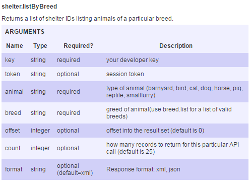
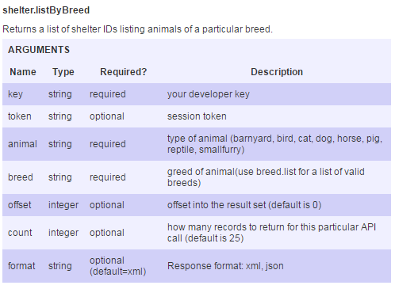

The Petfinder Tutorial: Pet Shelter Locator
Petfinder is a pet adoption database. It offers
an API to developers to use the informations about
pets and shelters:
https://www.petfinder.com/developers/api-docs
The Petfinder API can respond in two formats: XML
by default, and JSON. This tutorial will focus
on using JSON with jQuery.
The Petfinder API requires a developer API key to
use its methods in order to access the data stored
within. The registration process is detailed in the
API documentation.
The API documentation also includes a basic outline
of the methods available and what arguments are
required and allowed.
This guide will outline how to use the methods that
would be useful to locate a per shelter based on
animal breed and to get a list of pets at a given
shelter. The methods needed to accomplish this are
as follows:
breed.list: Returns a list of breeds by animal type.
shelter.listByBreed: Returns a list of shelters
based on animal type and breed.
shelter.getPets: Returns data on the pets that are
available at a given shelter.
The Petfinder API can return results in either XML
or JSON. The developers of the API have designed it
for use with XML and so the documentation focuses on
XML. Using it with JSON has turned out to be a
challenge. The data is stored as $t: value in
the JSON object:
"petfinder":{"pets":{"pet":[
{"description":{"$t":"text description here"}]
which is not the easiest json format to work with.
However, through the use of a jQuery ajax call, the
data can be accessed:
$.ajax({
dataType: "jsonp",
url: -complete url here-,
success:(function(data){
var sPets = data.petfinder.pets.pet;
And then retrieving the property values:
for(var q = 0; q < sPets.length; q++){
var desc = sPets[q].description.$t;
var description='<li>'+desc+'</li>';
$('#sid').append(description);
}
The ajax call returns an object that can be assigned
to a variable and then read by iterating through and
appending each property value to the html document.
The Petfinder API
API Methods:

 
